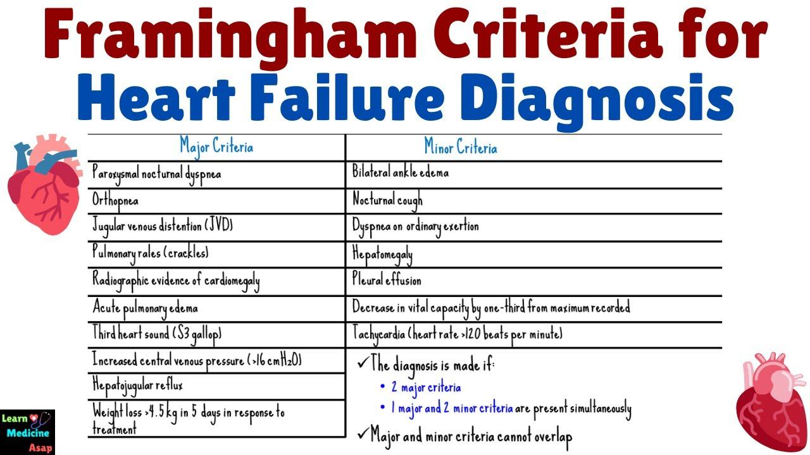
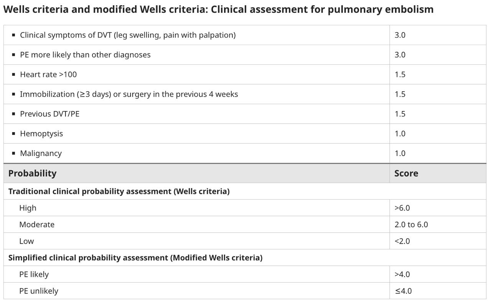
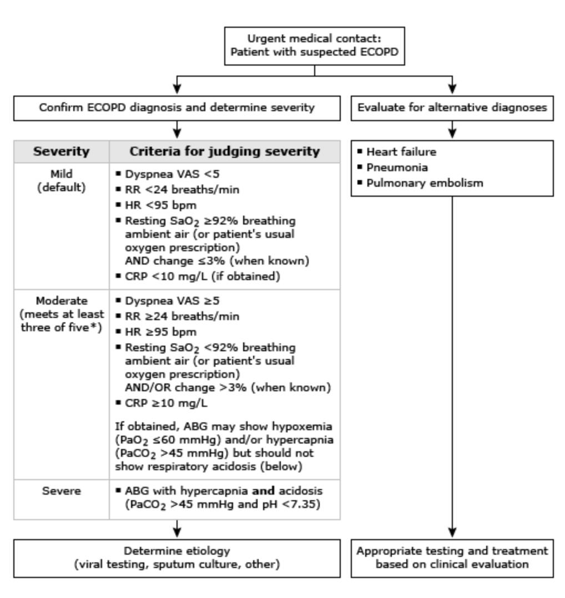
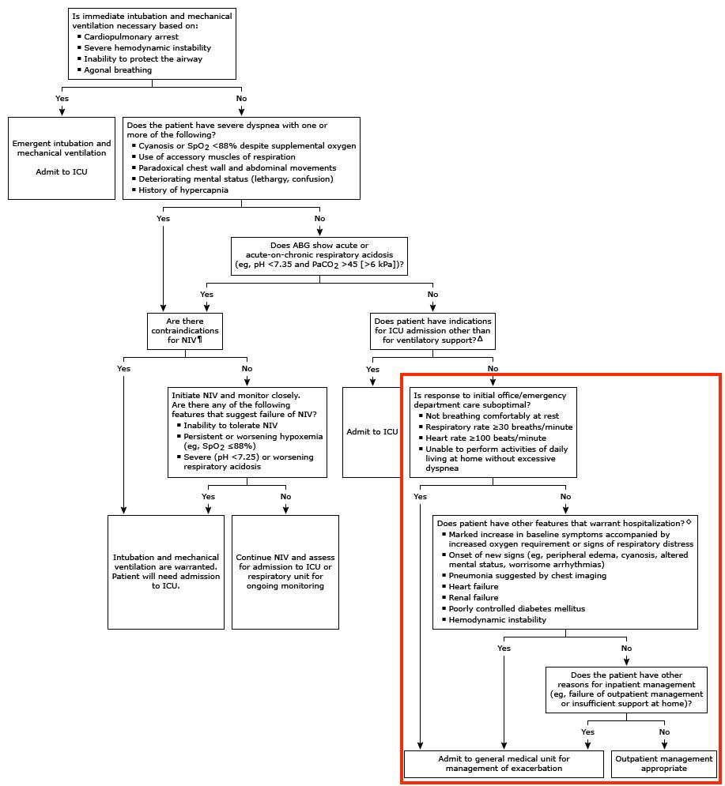

This is a basic AECOPD case in elderly patient which is commonly encounter in primary healthcare setting.
COPD exacerbation is characterized by an acute worsening in one or more of the following cardinal symptoms of COPD over ≤14 days:
●Cough (increase in frequency and severity)
●Sputum production (increase in volume and/or change in character)
●Dyspnea (increased level or with less activity)
Accompanying signs include tachypnea, tachycardia, hypoxemia, and impaired gas exchange. Exacerbations are associated with airway and systemic inflammation and are often caused by respiratory tract infections, pollution, or other acute airway insults.
-----Investigations-------
1. Check LL Edema: Correct!
Symptoms of COPD exacerbation are not specific to COPD. Therefore, patients with COPD should be carefully evaluated for coexisting or alternative conditions, particularly heart failure, pulmonary embolism, myocardial ischemia, pneumothorax, etc. Diagnosing or excluding these conditions is important to ensure timely concurrent management.
Checking lower limbs edema can screen out part of the risk of heart failure and pulmonary embolism. While peripheral edema is a common sign in advanced or right-sided heart failure due to fluid retention from impaired cardiac pumping. It also occurs in pulmonary embolism if associated with deep vein thrombosis. Although absence of lower limb edema does not reliably exclude heart failure and pulmonary embolism, it is a supportive sign to alert with these conditions. Prediction rules integrate edema with other factors like the Framingham risk score for heart failure and the Wells score for pulmonary embolism, which can evaluate the probability of the diseases. Further investigation and imaging are essential in symptomatic patients.

Table1: Framingham Criteria for Heart Failure Diagnosis

Table2: Wells criteria for PE
2. Spirometry: Wrong!
A peak expiratory flow rate is surely a significant clinical test when diagnosing and monitoring COPD disease progression.
However, we should not assess the patient using peak expiratory flow rate as an acute investigation due to low quality or unreliable.
In practice, patients are often unable to perform a good-quality forced expiratory manoeuvre during acute exacerbation.
3. Mobility Assessment: Wrong!
Based on the clinical findings, Mr. Wong’s SpO2 was borderline at rest, respiratory rate was 25/min, heart rate was 98 bpm and he complained of increased SOB once moving.
It shows moderate level of COPD exacerbation based on the Rome classification. Mobilising the patient may exacerbate the condition and lead to further desaturation.
As mobility assessment is a low priority, it is preferable to defer it to next visit once the exacerbation is settled.

Fig 1: Suspected COAD management flow
4. 6 in 1 RAT Kit: Correct!
As the OAH is currently in Flu A outbreaking, an RAT should be performed to screen out other causes of increasing SOB.
For patients with a COPD exacerbation during influenza season, we screen for influenza infection.
A 6 in 1 RAT kit is the fastest and most efficient way to differentiate influenza infection in primary care setting, which typically detect SARS-CoV-2 (COVID-19), Influenza A (Flu A), Influenza B (Flu B), Respiratory Syncytial Virus (RSV), Adenovirus (ADV), and Mycoplasma pneumoniae (MP).
Sensitivity (ability to detect true positives) and specificity (ability to detect true negatives) can vary depending on the brand, viral load, timing of symptoms, and testing conditions.
Independent reviews specific to 6-in-1 kits are limited, as most studies focus on single- or 2-3 pathogen tests. For combined tests (e.g., COVID/Flu/RSV), independent studies show sensitivities around 60-80% and specificities >98% worldwide.
We can notify CGAT Dr. and nurse to initiate empirical antiviral therapy, along with proper infection control measures, in cases where timely laboratory confirmation is not readily available or accessible.
Management – Explanation
1. Check Bronchodilator Technique: Correct!
All patients with COPD exacerbation are recommended inhaled short-acting bronchodilator (SABA, e.g., salbutamol, levalbuterol and SAMA, e.g., Ipratropium bromide) and continue long-acting bronchodilator (LABA and LAMA).
Still, checking correct bronchodilator technique is essential to ensure that medication reaches the lungs effectively. This requires patients to synchronise their breath with their hands to give the inhaler dose. Aerochamber and Haleraid are tools which can assist patients with problems using inhalers.
2. Utilise Crisis Pack: Correct!
A COPD crisis pack in Hong Kong typically contains a short course of oral antibiotics (e.g., Augmentin) and oral steroids (e.g., Prednisolone) prescribed by a doctor to manage COPD exacerbation, reducing hospitalisations.
Empiric antibiotic therapy used to treat potential bacterial infection causing increased sputum or change in sputum colour. Oral steroids aim to reduce airway inflammation during the exacerbation. The crisis pack should be used with moderate severity exacerbations per the Rome classification for exacerbation mentioned above.
3. Send patient to AED: Wrong!
An important step in the initial evaluation is to determine whether the patient needs hospitalisation or can be safely managed in community. While more than 80% of COPD exacerbations can be managed on an outpatient basis, it is important to identify patients who require a higher level of care. You may refer to the following AED algorithm:

Fig 2: COAD management algorithm in AED
Patients with mild symptoms, sufficient support (stable living conditions, caregiver support, and access to communication), and appropriate intensifying medication (bronchodilators, oral corticosteroids, and antibiotics), as well as the ability and understanding to return to medical evaluation if deterioration occurs, may be safely treated in community setting.
4. Seek CGAT Doctor Consultation: Correct!
Although hospitalisation is unnecessary, notify community doctor and responsible nurse is still needed. They can visit the OAH more frequently and closely monitor Mr. Wong’s condition. Once there is any change of condition, they can react immediately.
Learning Point:
Differentiate other causes apart from COPD exacerbation
Management of COPD exacerbation in community setting
Reference:
1. Global Initiative for Chronic Obstructive Lung Disease (GOLD). Global Strategy for the Diagnosis, Management and Prevention of Chronic Obstructive Pulmonary Disease: 2026 Report. www.goldcopd.org
2. UpToDate, COPD exacerbations: Management
3. UpToDate, COPD exacerbations: Clinical manifestations and evaluation
4. UpToDate, Wells criteria and modified Wells criteria: Clinical assessment for pulmonary embolism
5. Bosomworth NJ. Practical use of the Framingham risk score in primary prevention: Canadian perspective. Can Fam Physician. 2011 Apr;57(4):417-23. PMID: 21626897; PMCID: PMC3076470.
6. BMJ Best Practice, Acute exacerbation of chronic obstructive pulmonary disease
7. Hong Kong Thoracic Society, Impact of COPD self-management program on healthcare utilisation
8. Hong Kong Asthma Society, Using your inhalers
Case Creator: Mr. Henry Chan